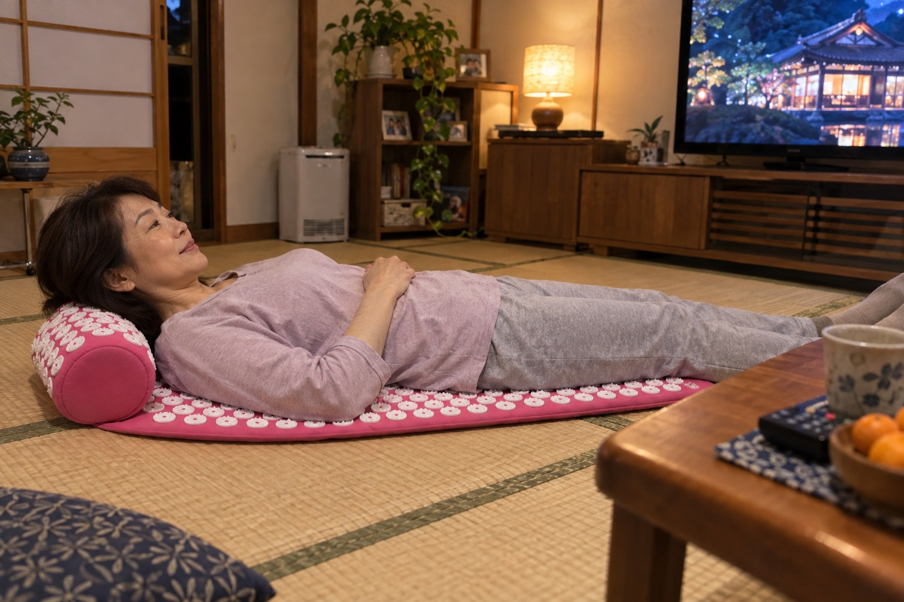
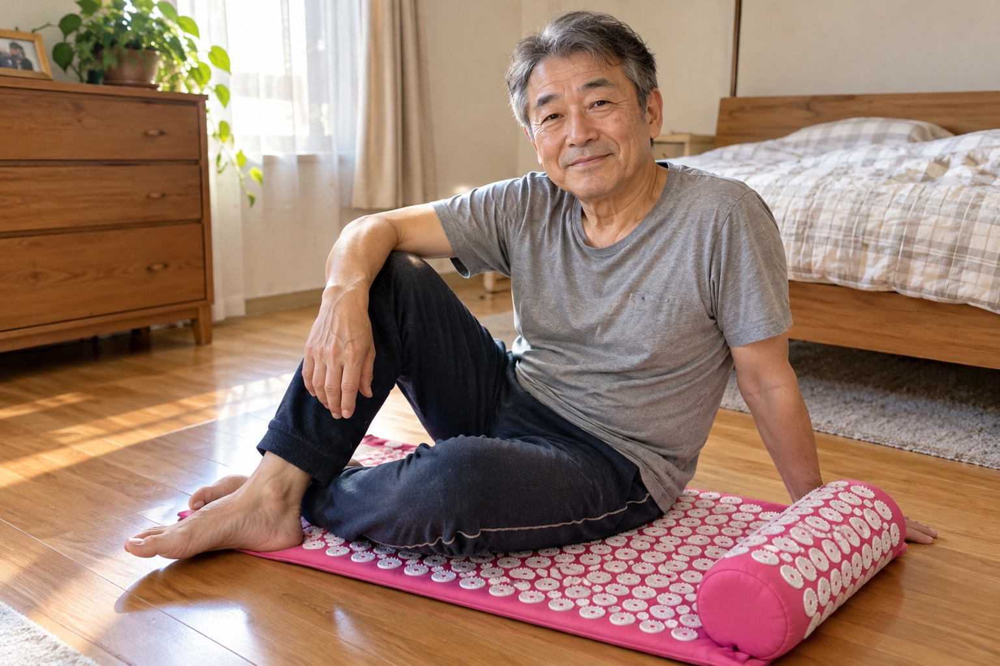
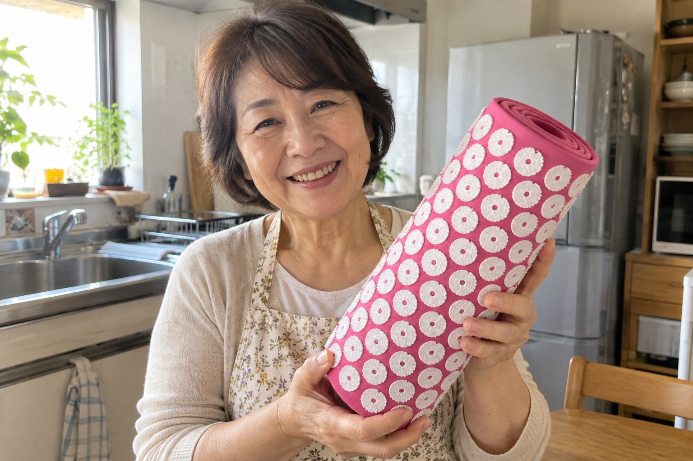
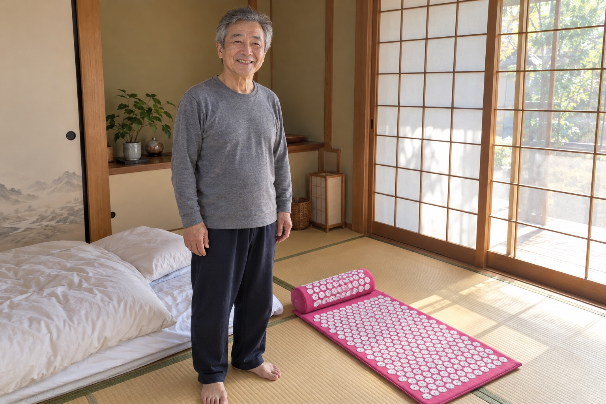
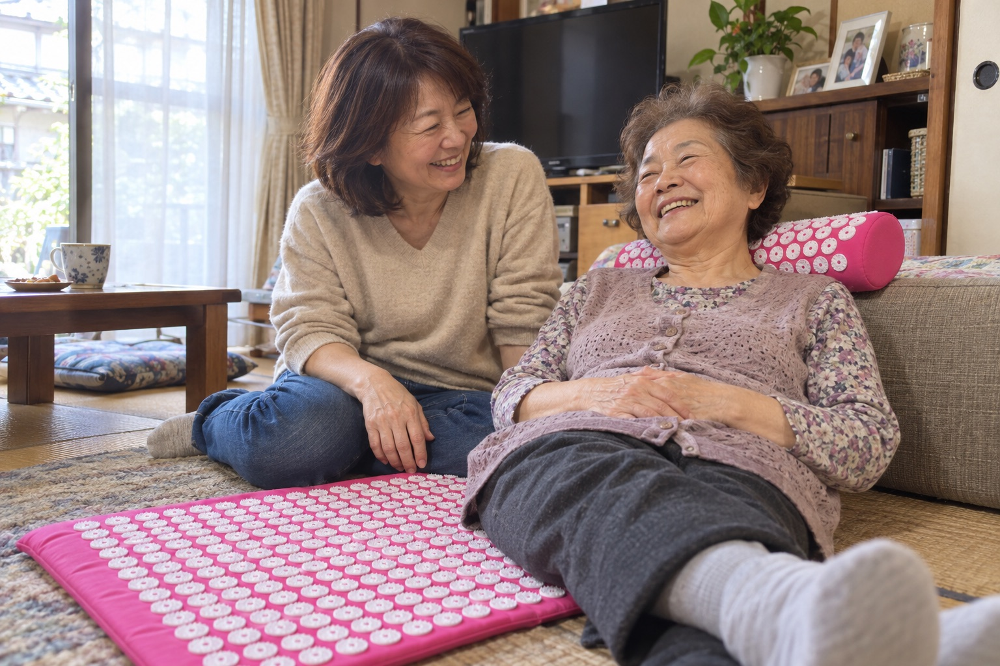

ストレッチしても翌朝また硬い腰は、「筋肉の酸欠」が進んだサインかもしれません
伸ばすだけで何年も過ごした方が行き着くのは、布団から一人で起き上がれない朝です。手をついても腰が言うことをきかず、トイレに立つにも家族を呼びます。
取材協力｜早川 由紀子 医師（整形外科専門医）✓
腰痛外来で14年、慢性腰痛の患者さんを診てきた。
文：からだ取材室 編集部｜更新：2026年10月9日
★★★★★4.6｜2,384件の評価
「朝、布団から起き上がる時のあの激痛が、来なくなりました。」佐藤 和子さん・62歳
秋の大感謝セール 最大50%OFF 秋の大感謝セール 最大50%OFF 秋の大感謝セール 最大50%OFF 秋の大感謝セール 最大50%OFF 秋の大感謝セール 最大50%OFF 秋の大感謝セール 最大50%OFF 秋の大感謝セール 最大50%OFF 秋の大感謝セール 最大50%OFF
ストレッチしても戻る腰の激痛？
先に「酸欠」を疑ってください
こんにちは。整形外科専門医の早川です。
腰痛外来で14年、慢性腰痛の患者さんを診てきました。
腰痛と付き合うのは、大変です。本当に、大変です。
夜、お風呂上がりにストレッチをすると、腰がふっと軽くなります。
ところが次の朝には、また板のように硬くなっています。
多くの方は、まず「伸ばし方が足りない」と考えます。
たしかに、ストレッチそのものは悪くありません。学会も勧めている方法です。
でも私は、ストレッチで伸ばした筋肉が、10分ほどで元の硬さに戻ってしまう方を、毎日のように見ています。
そういう方を診る時、私がまず疑うのは、筋肉の中の「酸欠」です。
筋肉に酸素が届かないと、いくら伸ばしても、筋肉は自分の力でゆるむことができません。
だから、ストレッチは続けてください。
ただ、筋肉の「中」で起きていることを、見落とさないでください。
朝、起き上がる時に激痛が走るようになった人に、私が話すこと
腰には、すべてを決めている物が1つあります。腰の奥の筋肉に届く「酸素」です。
背骨の両わきを縦に走る脊柱起立筋という筋肉があります。腰を支えている筋肉です。
酸素が足りていれば、この筋肉は、動いては休み、自分でゆるみます。
でも同じ姿勢が続くと、筋肉は縮んで固まります。
固まった筋肉は、自分の中を通る血管をギュッとつぶします。
血が通れないので、血が運ぶ酸素も届きません。これが「筋肉の酸欠」です。
洗濯バサミを思い出してください。何もしなければ、閉じたままです。開くには、指の力が要ります。
閉じた洗濯バサミが、固まった筋肉。開くための指の力が、酸素です。
ストレッチは、閉じた洗濯バサミを外から引っぱっているだけです。手を離せば、また閉じます。
酸素の足りない筋肉には、痛みの物質がたまります。痛いから、また縮みます。
日本ペインクリニック学会の治療指針も、この流れを「痛みの悪循環」と書いています。
そして腰痛に悩む人は、日本で推計2,800万人。40〜60代では、およそ4割です。
痛みに気づく頃には、この輪はもう毎日回っています。
数十年前まで、人は田んぼや畑で、一日じゅうかがんでは起きていました。動くたびに、腰に新しい血が流れこみました。
今、腰を大きく動かすのは、ストレッチの数分だけです。残りの時間、腰の筋肉は止まったままです。
寒くなるこれからの季節は、筋肉がもっと固まりやすくなります。
多くの対策は、痛みの「表面」しか触っていません。
❌ストレッチ…10分ほどで元の硬さに戻る
❌湿布…痛みの感じ方を鈍らせるだけ。奥の筋肉はゆるまない
❌マッサージ器…当てた一点だけ。持つ腕が先に疲れる
❌整体…週に1回。次の朝から、また固まり始める
必要なのは、固まった筋肉を広く押して、血を流しこむこと。それを毎日続けることです。
運よく、家で今夜からできる、とても簡単な方法があります。
私が、患者さんにすすめている物
ハリネル 自重指圧マット。14年、腰痛を診てきて、家で毎日続けられる物はこれだと思っています。理由はこうです。
布の一面に、プラスチックの小さな突起がびっしり並んでいます。
この上に寝転ぶと、自分の体重が、面いっぱいの突起に分かれて、腰から背中を一度に押します。これを「自重指圧」と呼びます。
皮ふはチクチクと感じます。そこへ、血が集まってきます。
数分で、腰と背中がじんわり温かくなります。集まった血が、固まった筋肉に酸素を運びます。
研究もあります。慢性腰痛の42人を2つに分けたドイツの試験で、1日30分・14日使った人たちは、使わなかった人たちより痛みの強さが下がりました。
家では、1日10分から始めてください。慣れたら、長く乗ってもかまいません。
別の32人の試験では、マットの上で背中の血のめぐりが増えるしるしが出ています。
使っている人は3万人以上。2,384件の評価で、平均は★4.6です。
いちばんうれしいのは、電気も充電もいらないことです。床に敷けば、今夜から使えます。
「毎晩30分ストレッチしても、朝はいつもカチカチでした。寝る前に10分乗るようにしたら、2週目から朝の一歩目が軽いんです。」山本 恵美子さん・58歳
「腰の痛みで夜中に2回は目が覚めていました。使い始めて3週目、気づいたら朝まで眠れていました。いまは庭の草むしりも、かがんだままできます。」中村 正子さん・66歳
朝、スッと起き上がれる腰を取りもどす ›
90日間の返金保証つき
毎日使うと、こう変わっていきます
1週目最初はチクチク。でも数分で、腰がじんわり温かくなります。寝る前の10分が、待ち遠しくなります。
2週目ストレッチをした次の朝も、腰が前ほど硬くありません。
4週目朝、目が覚めて、そのままスッと起き上がれる日が増えます。
2か月夜、腰の痛みで目を覚まさずに、朝まで眠れる日が続きます。
3か月かがむ・立つ・歩く。腰を気にせず動けて、あきらめていた庭仕事や旅行を、また楽しめます。
ハリネル 自重指圧マット
腰の奥まで、毎日10分
マットと半円の枕と収納バッグのセット。寝転ぶだけで、腰から背中までを一度に押します。
専門医の考え方から「広い面を・手を使わず・毎日」押せる形にしました
研究にもとづく指圧マットの試験で、慢性腰痛の痛みが下がっています
電気いらず電気も充電も使いません。丸めて袋ひとつに収まります
1日10分テレビを見ながら、寝転ぶだけです
いまだけ50%OFFで確かめる ›
90日間の返金保証つき・送料無料
腰の筋肉が「酸欠」になっている7つのサイン
1つでも当てはまるなら、今日のうちに手を打ってください。
❌朝、起き上がる時に激痛が走る
❌ストレッチをしても、次の日にはまた硬い
❌夕方になると、腰がどんより重い
❌長く座った後、立つ一歩目が痛い
❌押すと、背骨の両わきがゴリゴリする
❌夜中に、腰の痛みで目が覚める
❌病院の検査では「異常なし」と言われた
放っておけば、もっと悪くなります。でも今なら、まだ間に合います。
腰がよくならないのは、
あなたのせいではありません
あなたは、もう全部やってきました。毎晩のストレッチ、湿布、マッサージ器、整体。
でも、本当のことを言います。
どれも、腰の奥の筋肉に酸素を届けてはいませんでした。
ハリネルは、この押し方のために作られた、唯一の針マットです。酸欠の輪を、根っこで止めます。
朝はスッと起き上がる。夜は朝まで眠る。使った方の多くが、数週間で朝の起き上がりが変わったと話しています。
ただ痛みをしのぐ毎日ではありません。一年じゅう、自分の足で動ける毎日です。
腰の酸欠を、今夜から止める ›
90日間の返金保証つき
いまは50%OFF。1日あたり約75円です
ここまで読んだ方は、「いくらなのか」が気になっていると思います。
朝晩が肌寒くなって、腰が固まりやすい季節になりました。ありがたいことに、売り切れが続いています。
まず、今の腰の対策にかかっている値段と比べてみてください。
整体1回6,500円。週1回通えば、1年で約34万円です
湿布7枚で1,188円。毎日1枚なら、1日あたり約170円です
マッサージ器1万円台。当てた一点だけで、持つ腕が先に疲れます
ストレッチお金はかかりません。でも、10分ほどで元の硬さに戻ります
秋の大感謝セール
最大50%OFF・期間限定
セットに、収納バッグを無料でおつけします
セット（マット＋枕）54,980円 → 27,490円（税込）
収納バッグと送料は無料
セットを1年使うと、27,490円÷365日で、1日あたり約75円です。
1日75円で、毎晩、腰の奥の筋肉まで押せます。
いちばん多く選ばれているのは、マットと枕のセットです。腰と首の下に、同時に使えます。在庫があるうちに、ご自分の腰を守ってください。
50%OFFで針マットを確かめる ›
品切れの心配：高い送料無料90日間の返金保証
使っている人の声

★★★★★
寝る前の10分が楽しみ
最初はチクチクして驚きましたが、すぐ温かくなります。テレビを見ながら乗っています。
高橋 美代子さん・57歳
★★★★★
ストレッチの後に乗るのが正解でした
伸ばした後に10分。次の朝の硬さが、前と全然ちがいます。
小林 隆さん・61歳
★★★★★
整体の回数券を買わなくなりました
週1回の整体より、毎日の10分のほうが楽です。
加藤 洋子さん・64歳
★★★★★
布団から一気に起きられる
朝、手をついてゆっくり起きていたのが、そのまま起き上がれるようになりました。
伊藤 清さん・68歳
★★★★★
母にも買いました
私が使って良かったので、70代の母にも送りました。母は枕を気に入っています。
渡辺 真由美さん・52歳
90日間
90日間の返金保証
90日のあいだ、毎日使ってみてください。腰が変わらなければ、メールを1通送るだけで返金します。
理由は聞きません。面倒な手続きもありません。
90日間、ためしてみる ›
送料無料・90日間の返金保証
よくある質問
届くまで何日かかりますか？
ご注文から7〜10日でお届けします。送料は無料です。
返金保証はありますか？
はい。90日間の返金保証があります。メール1通で手続きできます。
痛くないですか？
最初の数十秒はチクチクします。数分でじんわり温かさに変わります。痛い時は、薄いシャツやタオルの上から使ってください。
何でできていますか？
布のマットに、プラスチックの突起が並んでいます。電気も充電も使いません。
セットと単品の違いは？
セットはマットと枕の両方に、収納バッグがつきます。腰と首の下に同時に使えます。
定期便はありますか？
ありません。一度買えば、ずっと使えます。
出典
・日本ペインクリニック学会『ペインクリニック治療指針』Ⅲ-D 筋・筋膜性疼痛症候群（痛みの悪循環）
・薬事日報 2013年4月1日（厚生労働省研究班の推計：腰痛の人は推計2,800万人）
・Hohmann C ほか. Evid Based Complement Alternat Med 2012:753583（慢性腰痛の42人の試験）
・Olsson EM ほか. J Altern Complement Med 2011;17(1):5-12（32人の試験）
※ この商品は医療機器ではありません。感じ方には個人差があります。